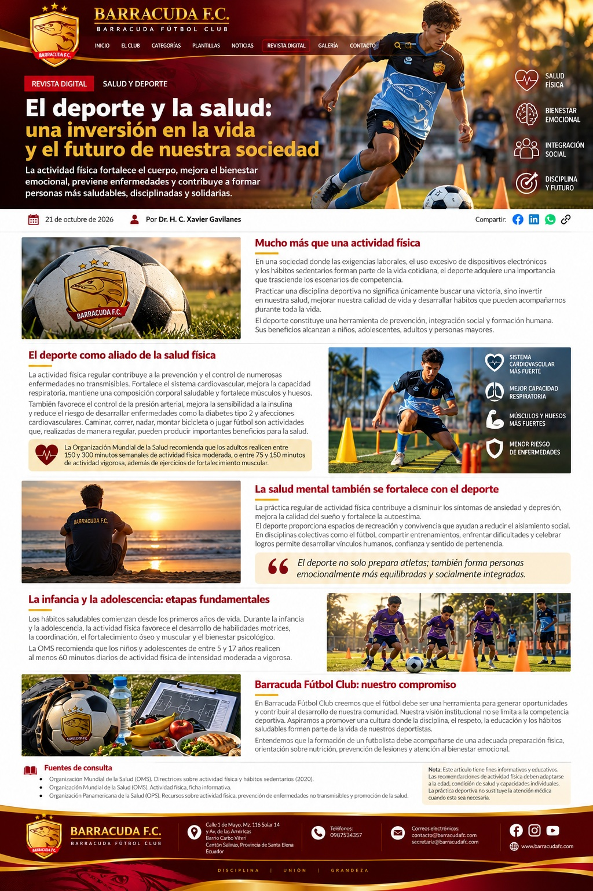

BARRACUDA F.C.
BARRACUDA FÚTBOL CLUB
INICIO
EL CLUB
CATEGORÍAS
PLANTILLAS
NOTICIAS
REVISTA DIGITAL
GALERÍA
CONTACTO
⌕
ES
EN
PT
FR
DE
IT
REVISTA DIGITAL
SALUD Y DEPORTE
♡
SALUD
FÍSICA
♧
BIENESTAR
EMOCIONAL
♙
INTEGRACIÓN
SOCIAL
◎
DISCIPLINA
Y FUTURO
📅 21 de octubre de 2026
👤 Por Dr. H. C. Xavier Gavilanes
Compartir:
f
in
☎
